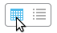
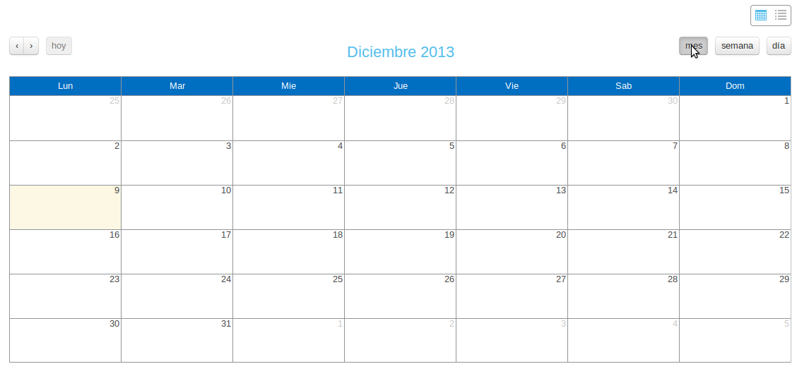
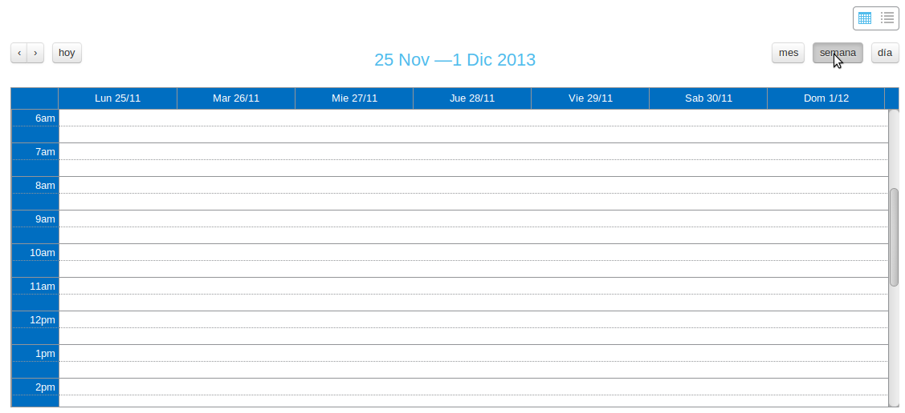

Scheduled Updates¶
ATMMonitoring allows us to execute scheduled data updates from ATM, that is, the updates execute periodically at a given time. In this way we ensure that the ATMs data are kept updated as often as we deem necessary.
We can access scheduled update page through the link Scheduler the side menu.

Link to Scheduler in the side menu.
Scheduled Update Viewer¶

Initial view of the update viewer.
Here we can see the scheduled updates, either through the calendar view or a particular listing.
- Calendar view: We can check for updates scheduled throughout a month, week or day.

Calendar view Selection.
With the buttons on the top left of the calendar we can navigate back and forth in time on the current view of the calendar.

Monthly calendar.

Weekly calendar.
Daily calendar.